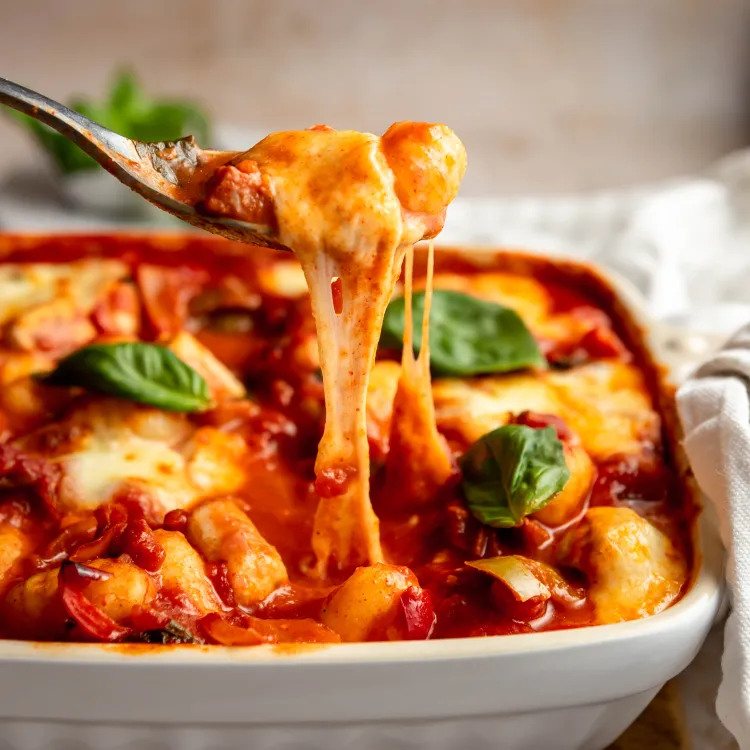

Chorizo & mozzarella gnocchi bake

Cosy mildly spicy chorizo gnocchi baked over with mozzarella is an amazing way to get dinner on the table.
Soft and fluffy gnocchi snuggled into a rich tomato and grilled pepper saucy with crispy bits of chorizo,
all baked under a blanket of bubbling golden mozzarella!
Oh, My Days!!!
Ingredients

- 1 tbsp olive oil
- 1 onion, finely chopped
- 2 garlic cloves, crushed
- 120g chorizo, diced
- 2 x 400g cans chopped tomatoes
- 1 tsp caster sugar
- 600g fresh gnocchi
- 125g mozzarella ball, cut into chunks
- small bunch of basil, torn
- green salad, to serve
Steps
First Stage
- Heat the oil in a medium pan over a medium heat.
- ry the onion and garlic for 8-10 mins until soft.
- Add the chorizo and fry for 5 mins more.
- Tip in the tomatoes and sugar, and season.
- Bring to a simmer, then add the gnocchi and cook for 8 mins, stirring often, until soft.
- Heat the grill to high.
Second stage
- Stir ¾ of the mozzarella and most of the basil through the gnocchi.
- Divide the mixture between six ovenproof ramekins, or put in one baking dish.
- Top with the remaining mozzarella, then grill for 3 mins, or until the cheese is melted and golden.
- Season, scatter over the remaining basil and serve with green salad.